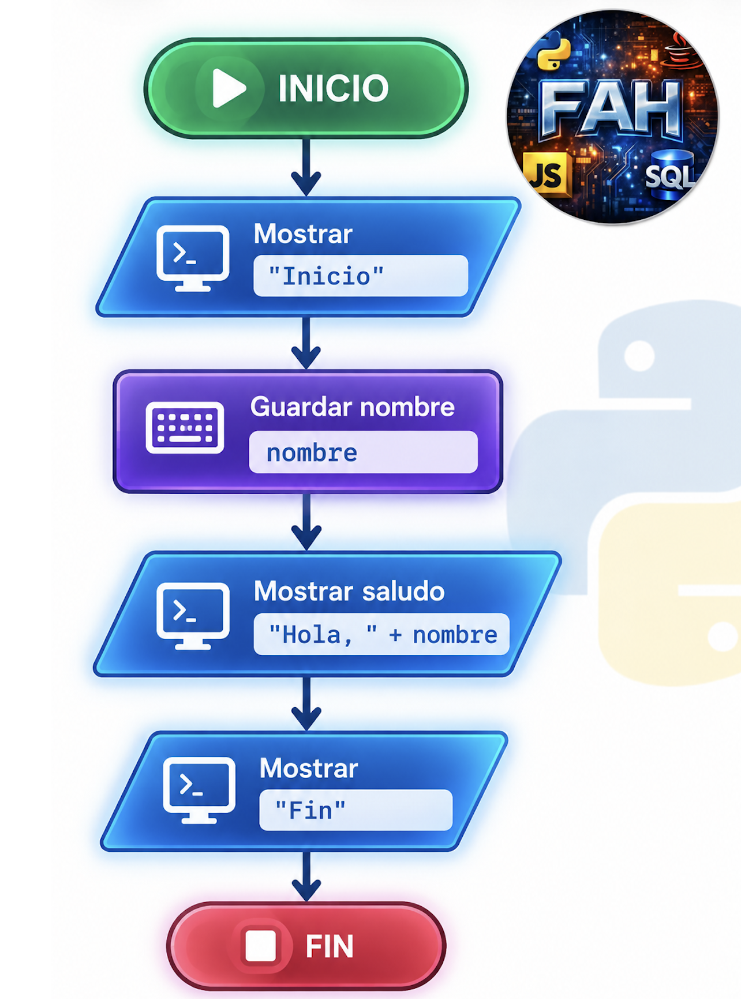
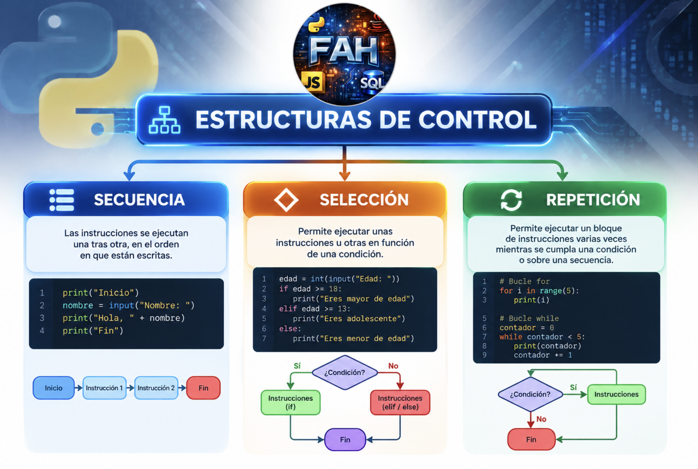

UD1. Estructuras de control en Python
Módulo Profesional 5099: Estructuras de control en Python
Resultados de aprendizaje: RA1, RA2 y RA3
Duración orientativa: primer trimestre
📑 Índice
- 1. Introducción
- 2. Resultados de aprendizaje
- RA1. Estructuras de control
- RA2. Sentencias condicionales
- RA3. Sentencias iterativas
- 3. ¿Qué es el flujo de ejecución?
- 4. Tipos de estructuras de control
- 5. La importancia de la indentación en Python
- 6. Operadores necesarios para trabajar con condiciones
- 7. Operadores lógicos
- 8. Tablas de verdad básicas
- 9. Estructuras secuenciales
- 10. Estructuras de selección
- 11.
if - 12.
if...else - 13.
if...elif...else - 14. Condiciones compuestas
- 15. Condicionales anidados
- 16. Condicionales compactos
- 17. Valores booleanos
- 18. Comparación de cadenas
- 19. Comprobar si un dato está vacío
- 20. Bucles
- 21. Bucle
for - 22.
range() - 23. Ejemplo: tabla de multiplicar
- 24. Recorrer una cadena
- 25. Recorrer una lista
- 26. Bucle
while - 27. Bucle infinito
- 28.
break - 29.
continue - 30. Bucles anidados
- 31. Combinación de estructuras
- 32. Ejemplo práctico: cajero automático
- 33. Ejemplo práctico: sistema de notas
- 34. Ejemplo práctico: contraseña
- 35. Ejemplo práctico: menú de aplicación
- 36. Ejemplo práctico: programación de drones
- 37. Buenas prácticas
- 38. Errores frecuentes
- 39. Actividades propuestas
- 40. Reto final de la unidad
- 41. Resumen
1. Introducción
Un programa informático está formado por una serie de instrucciones que el ordenador ejecuta siguiendo unas determinadas reglas. En los programas más sencillos, las instrucciones se ejecutan una detrás de otra, pero en aplicaciones reales necesitamos tomar decisiones y repetir determinadas operaciones.
Las estructuras de control permiten modificar el flujo normal de ejecución de un programa.
En Python podemos trabajar principalmente con:
- Estructuras secuenciales: las instrucciones se ejecutan en orden.
- Estructuras de selección: permiten tomar decisiones.
- Estructuras de repetición: permiten ejecutar un bloque varias veces.
En esta unidad aprenderemos a utilizar estas estructuras y a combinarlas para resolver problemas reales.
2. Resultados de aprendizaje
RA1. Estructuras de control
Identifica las estructuras de control en Python relacionándolas con aplicaciones reales.
Criterios de evaluación
- CE a) Se han identificado las estructuras de control que permiten modificar el flujo de las instrucciones.
- CE b) Se han representado en un diagrama de flujo gráfico las estructuras de control.
- CE c) Se ha analizado la importancia de las condiciones en cada estructura de control.
- CE d) Se han tenido en cuenta la importancia de los sangrados en las estructuras de control.
- CE e) Se han escrito bloques de control secuencial.
- CE f) Se han escrito bloques de control de selección.
- CE g) Se han escrito bloques de control de repetición.
RA2. Sentencias condicionales
Reconoce las sentencias condicionales en Python aplicándolas a la resolución de problemas que impliquen toma de decisiones.
RA3. Sentencias iterativas
Utiliza sentencias iterativas analizando las necesidades del código para resolver un problema.
3. ¿Qué es el flujo de ejecución?
El flujo de ejecución indica el orden en el que se ejecutan las instrucciones de un programa.
Por defecto, Python ejecuta las instrucciones de arriba hacia abajo.
print("Inicio")
nombre = "Ana"
print("Hola", nombre)
print("Fin")
El resultado será:
Inicio
Hola Ana
Fin
Podemos representar este funcionamiento mediante un esquema:

Sin estructuras de control, nuestros programas serían muy limitados.
4. Tipos de estructuras de control
Podemos clasificar las estructuras de control en tres grandes grupos:

4.1. Secuencia
Las instrucciones se ejecutan una detrás de otra.
nombre = input("Nombre: ")
edad = int(input("Edad: "))
print("Hola", nombre)
print("Tienes", edad, "años")
4.2. Selección
El programa decide qué instrucciones ejecutar dependiendo de una condición.
edad = int(input("Edad: "))
if edad >= 18:
print("Eres mayor de edad")
4.3. Repetición
Permite ejecutar varias veces un bloque de instrucciones.
for i in range(5):
print("Hola")
5. La importancia de la indentación en Python
Una de las características fundamentales de Python es que utiliza la indentación para delimitar bloques de código.
En otros lenguajes se utilizan llaves:
if (edad >= 18) {
mostrar("Mayor de edad");
}
En Python utilizamos dos puntos y sangrado:
if edad >= 18:
print("Mayor de edad")
La indentación forma parte de la sintaxis del lenguaje.
Ejemplo correcto
edad = 20
if edad >= 18:
print("Puedes acceder")
Ejemplo incorrecto
edad = 20
if edad >= 18:
print("Puedes acceder")
Python producirá un error porque la instrucción que pertenece al if no está indentada.
Recomendación
Utilizaremos normalmente 4 espacios para cada nivel de indentación.
if condicion:
instruccion_1()
instruccion_2()
Para estructuras anidadas:
if edad >= 18:
if tiene_entrada:
print("Puede acceder")
Cada bloque aumenta un nivel de indentación.
6. Operadores necesarios para trabajar con condiciones
Las estructuras de selección e iteración utilizan condiciones.
6.1. Operadores de comparación
| Operador | Significado | Ejemplo |
|---|---|---|
== |
Igual | edad == 18 |
!= |
Distinto | edad != 18 |
> |
Mayor que | edad > 18 |
< |
Menor que | edad < 18 |
>= |
Mayor o igual | edad >= 18 |
<= |
Menor o igual | edad <= 18 |
Ejemplos
edad = 25
print(edad == 25)
print(edad > 18)
print(edad < 30)
print(edad != 20)
Resultado:
True
True
True
True
7. Operadores lógicos
Podemos combinar varias condiciones utilizando:
andornot
7.1. and
Todas las condiciones deben cumplirse.
edad = 25
tiene_entrada = True
if edad >= 18 and tiene_entrada:
print("Puede acceder")
7.2. or
Es suficiente con que se cumpla una condición.
es_admin = False
es_profesor = True
if es_admin or es_profesor:
print("Puede acceder")
7.3. not
Invierte el resultado de una condición.
activo = False
if not activo:
print("El usuario está inactivo")
8. Tablas de verdad básicas
and
| A | B | A and B |
|---|---|---|
| False | False | False |
| False | True | False |
| True | False | False |
| True | True | True |
or
| A | B | A or B |
|---|---|---|
| False | False | False |
| False | True | True |
| True | False | True |
| True | True | True |
not
| A | not A |
|---|---|
| False | True |
| True | False |
9. Estructuras secuenciales
La estructura secuencial es la más sencilla.
Las instrucciones se ejecutan en el mismo orden en el que aparecen.
Ejemplo: cálculo de precio
precio = 25
cantidad = 3
total = precio * cantidad
print("Total:", total)
Flujo:
precio
↓
cantidad
↓
calcular total
↓
mostrar total
Ejemplo: área de un rectángulo
base = float(input("Base: "))
altura = float(input("Altura: "))
area = base * altura
print("Área:", area)
Ejemplo: conversión de temperatura
celsius = float(input("Temperatura en ºC: "))
fahrenheit = celsius * 9 / 5 + 32
print("Temperatura:", fahrenheit, "ºF")
10. Diagramas de flujo
Los diagramas de flujo permiten representar gráficamente un algoritmo.
Elementos habituales:
| Elemento | Uso |
|---|---|
| Óvalo | Inicio / fin |
| Rectángulo | Proceso |
| Rombo | Decisión |
| Paralelogramo | Entrada / salida |
| Flecha | Dirección del flujo |
Ejemplo conceptual:
┌───────────┐
│ INICIO │
└─────┬─────┘
↓
┌──────────────┐
│ Pedir edad │
└──────┬───────┘
↓
◇ edad >= 18? ◇
/ \
Sí No
↓ ↓
"Mayor" "Menor"
\ /
└─────┬──────┘
↓
┌─────────┐
│ FIN │
└─────────┘
11. Estructuras de selección
Las estructuras de selección permiten que un programa tome decisiones.
La estructura básica es:
if condicion:
instrucciones
Ejemplo:
edad = int(input("Introduce tu edad: "))
if edad >= 18:
print("Eres mayor de edad")
Si la condición es True, se ejecuta el bloque.
Si es False, se continúa después del bloque.
12. if...else
Cuando necesitamos ejecutar una alternativa si la condición no se cumple:
edad = int(input("Edad: "))
if edad >= 18:
print("Mayor de edad")
else:
print("Menor de edad")
Tenemos dos caminos:
edad >= 18?
/ \
Sí No
↓ ↓
Mayor Menor
13. if...elif...else
Cuando existen varias posibilidades podemos utilizar elif.
nota = float(input("Nota: "))
if nota < 5:
print("Suspenso")
elif nota < 7:
print("Aprobado")
elif nota < 9:
print("Notable")
else:
print("Sobresaliente")
Python evalúa las condiciones de arriba hacia abajo.
En cuanto encuentra una condición verdadera, ejecuta ese bloque y continúa después de toda la estructura.
14. Condiciones compuestas
Podemos combinar operadores.
edad = 25
nacionalidad = "ES"
if edad >= 18 and nacionalidad == "ES":
print("Puede realizar el trámite")
Otro ejemplo:
dia = "sábado"
if dia == "sábado" or dia == "domingo":
print("Fin de semana")
15. Condicionales anidados
Una estructura condicional puede contener otra estructura condicional.
edad = int(input("Edad: "))
if edad >= 18:
carnet = input("¿Tienes carnet? ")
if carnet == "si":
print("Puedes conducir")
else:
print("Necesitas carnet")
else:
print("No puedes conducir")
Debemos prestar especial atención a la indentación.
16. Condicionales compactos
Python permite escribir determinadas condiciones de forma compacta.
edad = 20
mensaje = "Mayor" if edad >= 18 else "Menor"
print(mensaje)
Es equivalente a:
if edad >= 18:
mensaje = "Mayor"
else:
mensaje = "Menor"
La versión compacta es útil cuando la decisión es sencilla.
17. Valores booleanos
Las condiciones trabajan con valores booleanos:
True
False
Ejemplo:
activo = True
if activo:
print("Usuario activo")
También podemos guardar directamente el resultado de una comparación:
edad = 25
es_mayor = edad >= 18
print(es_mayor)
Resultado:
True
18. Comparación de cadenas
Las cadenas también pueden utilizarse en condiciones.
usuario = input("Usuario: ")
if usuario == "admin":
print("Acceso de administrador")
Podemos utilizar métodos:
respuesta = input("¿Continuar? ")
if respuesta.lower() == "si":
print("Continuamos")
19. Comprobar si un dato está vacío
Las cadenas vacías se consideran falsas en un contexto booleano.
nombre = input("Nombre: ")
if nombre:
print("Nombre introducido")
else:
print("No has introducido ningún nombre")
20. Bucles
Los bucles permiten repetir instrucciones.
Python dispone principalmente de:
for
while
La elección depende del problema.
21. Bucle for
Utilizamos for cuando normalmente conocemos el conjunto de elementos que queremos recorrer o el número de repeticiones.
for i in range(5):
print(i)
Resultado:
0
1
2
3
4
Importante: range(5) genera valores desde 0 hasta 4.
22. range()
Podemos utilizar diferentes formas.
Un parámetro
for i in range(5):
print(i)
Genera:
0 1 2 3 4
Dos parámetros
for i in range(2, 6):
print(i)
Genera:
2 3 4 5
Tres parámetros
for i in range(0, 10, 2):
print(i)
Genera:
0 2 4 6 8
También podemos utilizar pasos negativos:
for i in range(10, 0, -1):
print(i)
23. Ejemplo: tabla de multiplicar
numero = int(input("Número: "))
for i in range(1, 11):
print(numero, "x", i, "=", numero * i)
Ejemplo de salida:
5 x 1 = 5
5 x 2 = 10
5 x 3 = 15
...
5 x 10 = 50
24. Recorrer una cadena
for también permite recorrer caracteres.
nombre = "Python"
for letra in nombre:
print(letra)
Resultado:
P
y
t
h
o
n
25. Recorrer una lista
frutas = ["manzana", "pera", "plátano"]
for fruta in frutas:
print(fruta)
Podemos utilizar condiciones dentro del bucle:
notas = [4, 7, 9, 3, 8]
for nota in notas:
if nota >= 5:
print(nota, "Aprobado")
else:
print(nota, "Suspenso")
26. Bucle while
while repite un bloque mientras una condición sea verdadera.
contador = 0
while contador < 5:
print(contador)
contador += 1
Resultado:
0
1
2
3
4
Es fundamental modificar las variables que intervienen en la condición para evitar bucles infinitos.
27. Bucle infinito
Este código genera un bucle infinito:
contador = 0
while contador < 5:
print(contador)
La variable contador nunca cambia.
La condición siempre será verdadera.
La solución:
contador = 0
while contador < 5:
print(contador)
contador += 1
28. break
break permite salir inmediatamente de un bucle.
while True:
palabra = input("Escribe una palabra: ")
if palabra == "salir":
break
print("Has escrito:", palabra)
El bucle continúa hasta que el usuario escribe salir.
29. continue
continue hace que Python pase directamente a la siguiente iteración.
for numero in range(1, 11):
if numero % 2 == 0:
continue
print(numero)
Resultado:
1
3
5
7
9
Estamos ignorando los números pares.
30. Bucles anidados
Podemos colocar un bucle dentro de otro.
for fila in range(3):
for columna in range(4):
print(fila, columna)
Esto resulta especialmente útil para trabajar con estructuras bidimensionales.
Ejemplo:
for fila in range(3):
for columna in range(3):
print("*", end=" ")
print()
Resultado:
* * *
* * *
* * *
31. Combinación de estructuras
Los programas reales combinan secuencias, condiciones y bucles.
Ejemplo:
for numero in range(1, 11):
if numero % 2 == 0:
print(numero, "es par")
else:
print(numero, "es impar")
Aquí tenemos:
- Un bucle
for. - Una condición
if. - Un
else. - Un operador
%. - Una secuencia de instrucciones.
32. Ejemplo práctico: cajero automático
Podemos utilizar las estructuras de control para crear un pequeño cajero.
saldo = 1000
opcion = ""
while opcion != "4":
print("\n--- CAJERO ---")
print("1. Consultar saldo")
print("2. Ingresar dinero")
print("3. Retirar dinero")
print("4. Salir")
opcion = input("Opción: ")
if opcion == "1":
print("Saldo:", saldo)
elif opcion == "2":
cantidad = float(input("Cantidad: "))
saldo += cantidad
print("Ingreso realizado")
elif opcion == "3":
cantidad = float(input("Cantidad: "))
if cantidad <= saldo:
saldo -= cantidad
print("Retirada realizada")
else:
print("Saldo insuficiente")
elif opcion == "4":
print("Hasta pronto")
else:
print("Opción incorrecta")
Este ejemplo combina:
- Variables.
- Entrada de datos.
- Secuencia.
- Condicionales.
- Condicionales anidados.
- Bucles.
- Operadores.
- Control del flujo.
33. Ejemplo práctico: sistema de notas
cantidad = int(input("Número de alumnos: "))
aprobados = 0
suspensos = 0
for i in range(cantidad):
nota = float(input(f"Nota del alumno {i + 1}: "))
if nota >= 5:
aprobados += 1
else:
suspensos += 1
print("Aprobados:", aprobados)
print("Suspensos:", suspensos)
34. Ejemplo práctico: contraseña
usuario_correcto = "admin"
password_correcta = "1234"
intentos = 0
acceso = False
while intentos < 3:
usuario = input("Usuario: ")
password = input("Contraseña: ")
if usuario == usuario_correcto and password == password_correcta:
acceso = True
break
print("Datos incorrectos")
intentos += 1
if acceso:
print("Acceso permitido")
else:
print("Cuenta bloqueada")
Este ejemplo permite trabajar con:
while.if.and.break.- Variables booleanas.
- Contadores.
35. Ejemplo práctico: menú de aplicación
Los menús son un caso habitual de utilización de estructuras de control.
opcion = ""
while opcion != "0":
print("""
1. Alta de usuario
2. Mostrar usuarios
3. Eliminar usuario
0. Salir
""")
opcion = input("Selecciona una opción: ")
if opcion == "1":
print("Alta de usuario")
elif opcion == "2":
print("Mostrar usuarios")
elif opcion == "3":
print("Eliminar usuario")
elif opcion == "0":
print("Saliendo...")
else:
print("Opción no válida")
Este patrón aparecerá posteriormente en aplicaciones más complejas.
36. Ejemplo práctico: programación de drones
Las estructuras de control también pueden utilizarse para automatizar dispositivos físicos.
Por ejemplo, una secuencia conceptual de vuelo podría ser:
despegar()
for i in range(4):
avanzar()
girar_derecha(90)
aterrizar()
Podemos introducir condiciones:
if bateria > 20:
despegar()
ejecutar_ruta()
aterrizar()
else:
print("Batería insuficiente")
Y un control de seguridad:
while bateria > 20:
avanzar()
if obstaculo_detectado:
parar()
girar_derecha()
En unidades posteriores aplicaremos estos conceptos a la programación de drones con Python.
37. Buenas prácticas
Utilizar nombres descriptivos
Mejor:
numero_alumnos = 20
que:
x = 20
Evitar condiciones innecesariamente complejas
Mejor:
if edad >= 18:
print("Mayor")
que crear expresiones difíciles de interpretar.
Mantener una indentación consistente
if usuario_activo:
print("Usuario activo")
mostrar_menu()
Evitar bucles infinitos accidentales
Comprobar siempre que un while pueda terminar.
Dividir problemas grandes
Si una solución empieza a crecer demasiado, posteriormente podremos utilizar funciones para dividirla en partes más pequeñas.
38. Errores frecuentes
Confundir = con ==
Incorrecto:
if edad = 18:
Correcto:
if edad == 18:
= asigna un valor.
== compara valores.
Olvidar los dos puntos
Incorrecto:
if edad >= 18
print("Mayor")
Correcto:
if edad >= 18:
print("Mayor")
Incorrecta indentación
Incorrecto:
if edad >= 18:
print("Mayor")
Correcto:
if edad >= 18:
print("Mayor")
Error en range()
for i in range(5):
print(i)
No imprime 5.
Imprime:
0
1
2
3
4
39. Actividades propuestas
Actividad 1. Mayor de edad
Solicita la edad de una persona e indica si es mayor o menor de edad.
Actividad 2. Número positivo, negativo o cero
Solicita un número e indica:
- Positivo.
- Negativo.
- Cero.
Actividad 3. Calculadora
Solicita dos números y una operación:
+
-
*
/
Realiza la operación correspondiente.
Controla también la división entre cero.
Actividad 4. Calificación
Solicita una nota entre 0 y 10 e indica:
- Suspenso.
- Aprobado.
- Notable.
- Sobresaliente.
Actividad 5. Tabla de multiplicar
Solicita un número y muestra su tabla del 1 al 10.
Actividad 6. Contador
Muestra los números del 1 al 100.
Posteriormente modifica el programa para mostrar solamente los números pares.
Actividad 7. Suma acumulada
Solicita números al usuario hasta que introduzca 0.
Al finalizar muestra la suma total.
Ejemplo:
Número: 5
Número: 8
Número: 10
Número: 0
Suma: 23
Actividad 8. Contraseña
Permite al usuario introducir una contraseña.
El usuario tendrá un máximo de tres intentos.
Si introduce la contraseña correcta:
Acceso permitido
Si agota los tres intentos:
Usuario bloqueado
Actividad 9. Menú
Crea un menú con:
1. Saludar
2. Mostrar fecha
3. Mostrar información
0. Salir
El menú debe repetirse hasta seleccionar 0.
Actividad 10. Número secreto
El programa debe almacenar un número secreto.
El usuario tendrá que adivinarlo.
Después de cada intento el programa indicará:
- "El número es mayor".
- "El número es menor".
- "¡Correcto!"
40. Reto final de la unidad
Sistema de gestión de acceso
Desarrolla un programa que simule el control de acceso a una instalación.
El programa deberá:
- Solicitar usuario y contraseña.
- Permitir un máximo de tres intentos.
- Mostrar un menú después del acceso.
- El menú tendrá:
1. Registrar entrada
2. Registrar salida
3. Consultar estado
4. Salir
- El programa deberá mantenerse funcionando hasta seleccionar
4. - No se permitirá registrar una salida si no existe una entrada.
- No se permitirá registrar una segunda entrada si el usuario ya está dentro.
- El programa deberá mostrar mensajes apropiados en cada situación.
Ejemplo
=== CONTROL DE ACCESO ===
Usuario: alumno
Contraseña: 1234
Acceso permitido.
1. Registrar entrada
2. Registrar salida
3. Consultar estado
4. Salir
Opción: 1
Entrada registrada.
Opción: 3
Estado: DENTRO
Opción: 1
Error: ya existe una entrada registrada.
41. Resumen
En esta unidad hemos aprendido que las estructuras de control permiten modificar el flujo de ejecución de un programa.
Las tres estructuras fundamentales son:
Secuencia
instruccion_1()
instruccion_2()
instruccion_3()
Selección
if condicion:
instrucciones
else:
instrucciones
Repetición
for elemento in elementos:
instrucciones
o:
while condicion:
instrucciones
También hemos trabajado:
- Operadores de comparación.
- Operadores lógicos.
- Valores booleanos.
- Indentación.
- Diagramas de flujo.
- Condicionales anidados.
range().break.continue.- Bucles anidados.
- Resolución de problemas.
- Aplicaciones prácticas.
Estos conocimientos serán la base para las siguientes unidades y, posteriormente, para desarrollar aplicaciones con Django y realizar proyectos de programación de drones con Python.